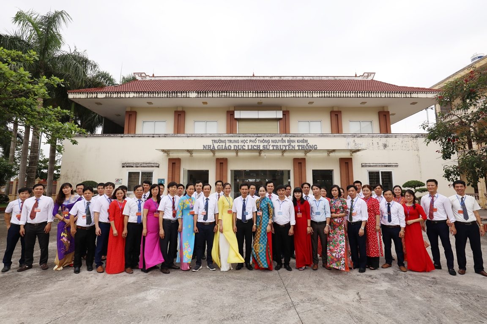
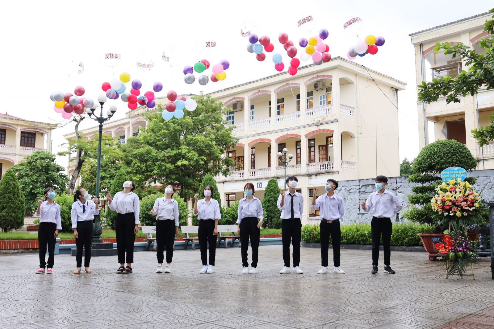
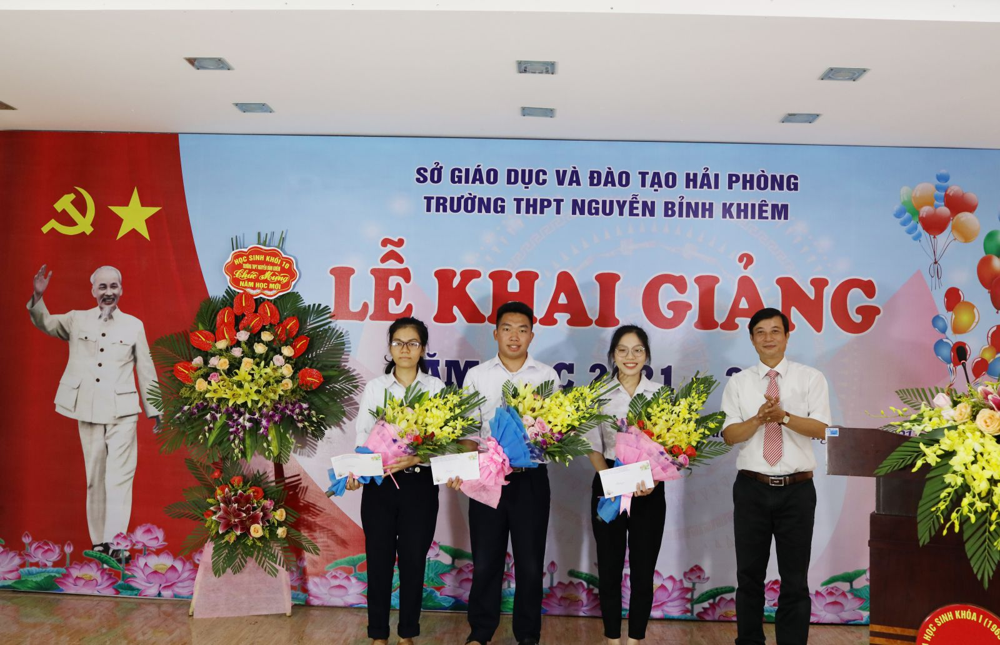

/ Giới thiệu
1.1 Lịch sử hình thành
Trải qua 61 năm ( từ năm 1961 đến nay), nhờ sự tâm huyết, trí tuệ của các thế hệ thầy trò trường có cho mình bề dày thành tích.Ngược lại thời gian về quá khứ, từ năm 1961 đến 1965, trường mang tên là trường cấp II Nguyễn Bỉnh Khiêm. Trong 5 năm này tỷ lệ học sinh đỗ tốt nghiệp tăng cao, trường được công nhận là trường tiên tiến. Bên cạnh đó nhiều giáo viên đã trở thành cán bộ lãnh đạo huyện, thành phố.
Giai đoạn 1965 -1970, đế quốc Mỹ bắn phá miền Bắc, Trường đổi tên thành trường cấp III Lý Học. Thời kỳ này là thời điểm khó khăn cho việc học cũng như chống giặc. Đã có nhiều học sinh cũng như giáo viên đã sẵn sàng cống hiến tuổi xuân lên đường nhập ngũ đã lên đường nhập ngũ bảo vệ tổ quốc. Sau này đã có rất nhiều học sinh trở thành nhà quản lý, làm chủ doanh nghiệp, nhà khoa học đồng thời cũng có người làm cán bộ cao cấp của lực lượng vũ trang.
Trường có tên là Trường cấp III Nguyễn Bỉnh Khiêm từ 1970. Chất lượng giáo dục của trường vẫn không ngừng cải thiện. Tỷ lệ tốt nghiệp, Tỷ lệ học sinh đậu Đại học, Cao đẳng luôn ở tốp đầu thành phố. Có nhiều học sinh giỏi đi du học ở các nước lớn.
Bộ giáo dục tặng cho trường bằng khen “ Tiên tiến xuất sắc” và trường trở thành điểm sáng của Giáo dục Hải Phòng. Cùng với sự phát triển của đất nước và ngành Giáo dục Hải Phòng, trường có những bước chuyển biến mạnh mẽ.

1.2 Điểm tuyển sinh đầu vào qua các năm
Điểm chuẩn của THPT Nguyễn Bỉnh Khiêm năm học 2020-2021 với nguyện vọng 1 là 20.8 và nguyện vọng 2 là 31.9, Năm học 2021-2022, nguyện vọng 1 là 18.6 và nguyện vọng 2 là 25.8 điểm. Đây có thể nói là điểm số vừa phải trong tình hình dịch covid 19. Qua điểm số này các phụ huynh và các bạn học sinh có thể tham khảo, xem xét cân nhắc cho năm học tới.
1.3 Cơ sở vật chất
Đánh giá trường THPT Nguyễn Bỉnh Khiêm có tốt không, liệu môi trường, cơ sở vật chất có đảm bảo tiện nghi và đáp ứng nhu cầu học tập của học sinh? Được ví là ngôi trường đẹp nhất thành phố hoa phượng đỏ, trường có hệ thống phòng học cũng như cơ sở vật chất đầy đủ tạo điều kiện học tập tốt nhất đến học sinh. Khuôn viên trường có hệ thống cây xanh tươi tốt cùng bức tượng đài Nguyễn Bỉnh Khiêm.Trường là niềm mơ ước của bao học trò trung học cơ sở với môi trường cảnh quan xanh - sạch - đẹp. Để trường có cơ ngơi như hôm nay phải kể đến sự quan tâm, đầu tư của Sở giáo dục và Đào tạo Hải Phòng, UBND thành phố, Huyện ủy Vĩnh Bảo, cùng giúp đỡ của Đại học Quốc gia Hà Nội, và sự ủng hộ lớn từ phụ huynh, cựu học sinh.

Xem thêm ...